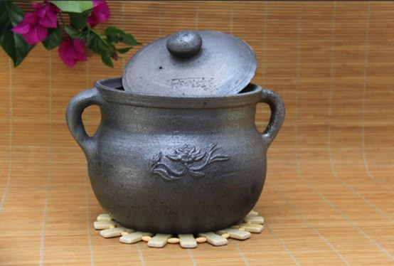

荥经砂器，又称荥经黑砂，是四川省雅安市荥经县的传统手工艺，距今已有2300多年历史。其以严道古城独有的白善泥为原料，采用千年传承的"馒头窑"土法烧制而成，被誉为"土与火的艺术"。
2008年，荥经砂器烧制技艺被列入第二批国家级非物质文化遗产名录，2013年获得国家地理标志产品保护，2019年注册地理标志证明商标，享有"东有宜兴紫砂，西有荥经黑砂"的美誉。
荥经砂器不仅是实用的生活器皿，更承载着丰富的文化内涵，是南方丝绸之路和茶马古道上的重要文化载体。如今，荥经砂器已从传统的砂锅、药罐等生活用品，发展成为兼具实用与艺术价值的高端工艺品，远销国内外。
荥经砂器的历史可追溯至战国时期，据史书记载和出土文物考证，仅从秦惠文王建筑严道（公元前312年）算起，已有2300多年历史。1982年，考古学家在荥经县严道古城遗址附近发掘的秦汉墓葬中，发现了与现代荥经砂器工艺相似的陶器，证实了其悠久的制作传统。
砂器制作技艺初步形成，主要生产简单的生活用具。
随着南方丝绸之路的开通，荥经作为商贸重镇，砂器制作工艺日趋成熟，产品开始向外流通。
砂器与茶马古道贸易紧密结合，成为重要的贸易商品。
砂器制作技艺进一步发展，形成了较为完善的生产体系。
20世纪50年代成立国营砂锅厂，80年代后逐渐转型为工艺砂器，2008年被列入国家级非物质文化遗产名录。
1972年、1976年、1977年，荥经砂器参加全国广交会、北京工艺美术产品展。
1981年，荥经砂器参加美国费城工艺美术产品展览。
2008年，荥经砂器烧制技艺被列入第二批国家级非物质文化遗产名录。
2009年，荥经被授予"中华砂器第一乡"称号。
2013年，荥经黑砂被列为国家地理标志保护产品。
2019年，荥经砂器成功注册地理标志证明商标。
2024年，荥经砂器代表雅安非遗亮相2024全球熊猫伙伴大会。
荥经砂器的独特品质源于其稀缺的原料资源和科学的配比工艺。核心原料"白善泥"仅产于荥经县严道古城遗址周围10平方公里范围内，是距今约2亿年前三叠纪时期沉积形成的优质黏土。
白善泥主要化学成分为：Al₂O₃（28-32%）、Fe₂O₃（8-12%）、CaO（3-5%）、MgO（2-4%），以及微量的钾、钠氧化物。这些成分赋予砂器良好的热稳定性和化学惰性，确保其耐高温、抗腐蚀的特性。
尤为重要的是，白善泥中不含铅、镉等有毒重金属元素，pH值呈弱碱性，符合现代健康生活理念。
荥经砂器的制作工艺复杂精细，主要包括以下七道工序：
选取古城附近的白善泥，露天堆放一段时间，使其自然风化。
将风化后的粘土和煤渣碾磨成细粉，传统方法采用役牛碾细，现代则多用球磨机粉碎。
按比例将粘土粉和煤渣粉混合，加入适量水分，充分搅拌揉练成泥团。
采用传统的托转盘手工拉胚，脚蹬踩转盘，根据手感和经验成型。复杂器型需分"底坯"和"接坯"两步完成。
将成型的坯体放置在阴凉通风处自然晾干，避免阳光直射导致开裂。
将晾干的坯体放入"馒头窑"中，以煤为燃料，经1000℃-1280℃高温焙烧约1小时。
砂器烧透后，迅速将其从窑中取出，投入装有杉树枝、松木屑的地坑中，利用高温使木屑燃烧产生的烟雾在砂器表面形成氧化物结晶，即"取釉"工艺。待冷却后取出，检验分类。
展示工匠使用拉胚转盘初步拉制砂器坯体的基本形状，脚蹬转盘匀速旋转，双手配合提拉泥土形成器型轮廓。
展示在初步成型基础上，通过手指按压、塑形工具修整，确定砂器的口沿、腹部、底部等细节形态。
展示使用雕刻工具，在半干坯体表面刻划传统纹饰或新型纹饰，增强砂器的艺术表现力。
荥经砂器最具特色的工艺有两点：一是馒头窑烧制，这是目前世界上唯一采用的土法烧制砂器的窑型；二是闷烧呛釉工艺，通过高温坯体与木屑等可燃物的化学反应，自然形成银灰色的金属光泽表层，无需额外施釉。
这些独特的工艺使荥经砂器具有耐高温、抗腐蚀、不氧化、不变色、不变形等特点，煮食不与食品中的酸、碱、盐发生化学反应，能保持食物的营养成分和原汁原味，尤其适合熬制中药，不会改变药性。

图：荥经传统砂器碗
该砂器碗采用严道古城特有的白善泥与煤渣混合烧制而成，表面呈现深黑色，质地粗糙却富有肌理感，边缘保留手工制作的自然不规则形态。器物置于传统木板上，背景报纸与木质桌面营造出古朴的制作场景氛围，直观展现了荥经砂器"土与火的艺术"的质朴美学。
荥经砂器不仅是一种实用器皿，更是承载着地方历史文化的活态遗产。它体现了荥经人民适应自然、利用自然的智慧，反映了当地的生活方式、价值观念和审美情趣。
"朴素大方、实用耐用"的美学风格体现了巴蜀文化中"尚简"、"务实"的精神特质。
在漫长的历史进程中，荥经砂器形成了"朴素大方、实用耐用"的美学风格，体现了巴蜀文化中"尚简"、"务实"的精神特质。其器型设计注重功能与形式的统一，线条简洁流畅，纹饰古朴典雅，展现了中国传统工艺"天人合一"的造物理念。
荥经地处南方丝绸之路和茶马古道的交汇点，是古代汉文化与西南少数民族文化交流的重要枢纽。荥经砂器作为当地的特色产品，不仅满足了沿线商旅的生活需求，还成为文化交流的载体，促进了不同地域间的技术传播和文化融合。
在茶马古道贸易中，荥经砂器与茶叶、丝绸等商品一同流通，成为连接内地与边疆的重要贸易商品。砂器的制作技艺也随着贸易往来不断传播和发展，对西南地区的制陶业产生了深远影响。
近年来，荥经砂器在传承传统工艺的基础上，不断创新发展，从单一的生活用品向高端工艺品、文创产品、旅游纪念品等多元化方向拓展。2024年，荥经砂器产业年产值达4亿元，从业人员约1万人，成为当地经济发展的重要支柱和文化名片。
荥经砂器的保护与传承不仅关乎一项传统技艺的延续，更是对地方文化身份的认同和文化自信的建立。通过发展砂器文化产业，荥经正在探索一条"文旅融合"的乡村振兴之路，让古老的非遗在当代焕发新的生机。
由省级非遗传承人、曾氏砂器世家第九代传人曾庆红创立，坚持手工制作和传统“馒头窑”烧制。产品涵盖茶具、艺术摆件等100余种，保留古朴粗犷风格，又融入现代审美。工作室每周六定点烧窑，免费对外开放，可参观完整制作流程。还设有体验活动，可亲手制作砂器。
荥经曾家窑是荥经砂器制作的代表之一，由曾氏砂器世家创立，传承至今已到第十代。曾家窑坚持手工制作和传统“馒头窑”烧制，产品涵盖实用砂器和工艺砂器，包括茶具、艺术摆件等100余种，年产各类砂器3万余件。
通过先进的3D建模技术，我们为您呈现荥经砂器的精细结构和独特工艺。
通过3D交互体验，您可以更加直观地了解荥经砂器的制作工艺和艺术价值。